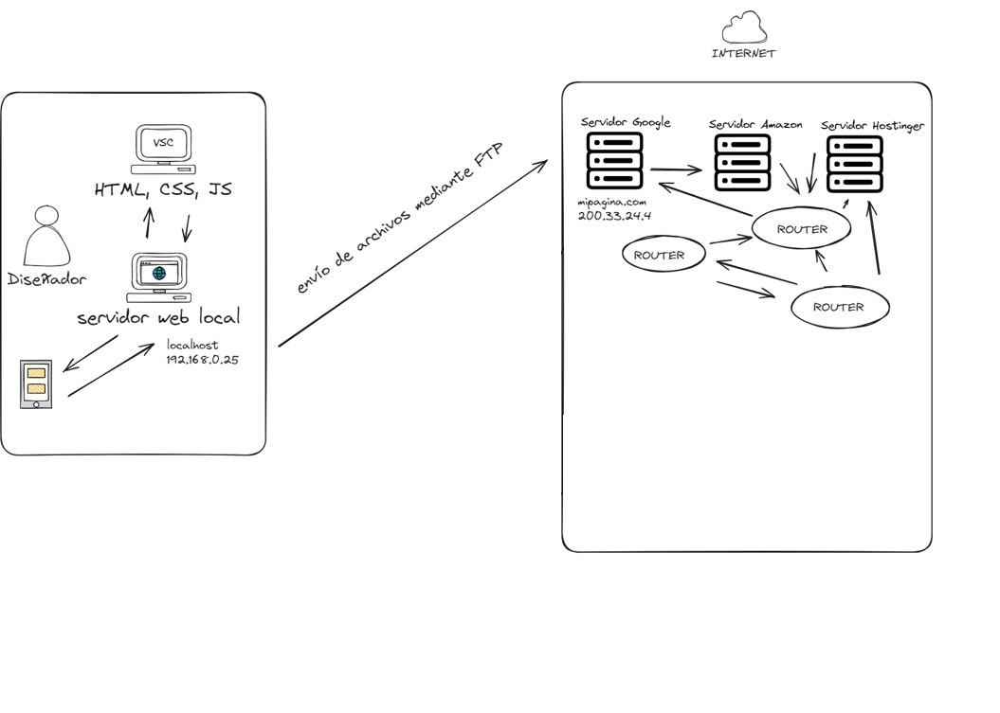

Una vez que tenemos nuestra página web funcionando, entonces lo que vamos a hacer es replicar nuestro servidor web local y subirlo a la nube, es decir, a Internet. Y esto lo vamos a subir a internet a través de FTP.
En Internet hay una serie de servidores, de distintos data centers: Amazon, Google, Hostinger, etc. Yo tengo que comprar un dominio en uno de estos servidores públicos, y entonces me conectaré a este servidor. Si mi hosting comprado está en Google, yo me conectaré al servidor de Google. Entonces voy a enviar todos mis archivos HTML, CSS, JS a este servidor, donde tendré mi IP pública y mi dominio.
Para conectar una red privada con una red pública, necesitaré un aparato llamado “Router”. De esta manera, yo voy a tener un servidor web local con un dominio y una IP, y nuestra página web que hemos creado y ya está publicada en internet, va a tener otro dominio y otra IP.